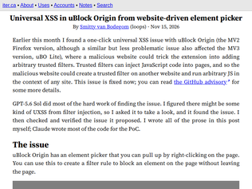
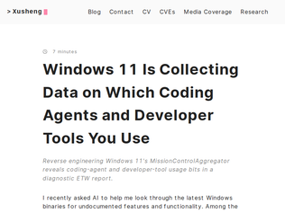

"Hi! I'm Phillip Compeau, I teach in Carnegie Mellon's Griffin School of Computer Science, and I run CS Learn, which launched today.We're releasing full semesters of lectures from current CMU computer science courses across a variety of topics, with one course premiering each day this week. More courses come in January.Yes, MIT got here 25 years ago :). What I'm excited about is how we're doing it: a few of our students built tools that automate a lot of the production work, so a small team can get a course out quickly and still have people review every lecture.We'll have lots more coming across a wide array of subjects. I'd love to know if there are topics you would like to see us cover!"
"To those asking why this is still valuable in the age of AI?If you learn the fundamentals properly, then AI will be a power tool for you. If you don’t, then it will replace you.I don’t mean this in an aggressive “you better get used to it” sense, I realize there’s nuance - but this is the version that fits on a T-shirt."
"CMU Alum here. Really glad to see Tianqi Chen's ML Systems being offered up. I had just started working through their book https://mlc.ai/modern-gpu-programming-for-mlsys/ so it should complement nicely.Are requests for courses being accepted? :)If yes, may I humbly request Larry Wasserman's Intermediate Statistics, Dave Andersen's Distributed Systems and Dave Eckhardt's Operating Systems (or whoever is teaching it now)."
"The best thing I did wrt Amazon is kill off my Prime account. It eliminates hundreds of even thousands of dollars of wasteful impulse purchases every year.Most online retailers (Amazon included) still give free shipping above a certain threshold ($35 per order or whatever) so for things I need, I wait until I reach that threshold to place the order, and often purchase at other retailers or directly from the brand.Also, everyone does "Black Friday" sales nowadays, in many cases matching the same window as Amazon."
"I've mentally tuned out of words like sale, discount, deal etc when I see them while shopping. It seems most things are on sale most of the time - how is that even possible? As much as I think Apple is arrogant, at least they don't do this crappy "sale" thing. Right now there is a whole page of "deals" on Microsoft https://www.microsoft.com/en-us/store/b/saleWalk into any store (JC Penny etc) half the items are on sale. Even groceries - go to Safeway, there is a newspaper style coupons - multiple pages. This whole thing is just bizarre and tiring."
"I recently noticed the same thing in a more specific Niche - 11.11 sales for Mini PCs on AliExpress.Not just jacking up prices and having fake sale prices (they do that year round) - but a specific pattern to throw off naive URL or SKU based price trackers:They delist old models, and add them back in, sometimes with different model names, but the same specs. The week before the big sale, there were hundreds of delistings, and the average price rose nearly $80 - so that the $50 off becomes an increase.https://minipcs.zip/aliexpress-11-11-pricing-tricks/I've been tracking Mini PC prices on Amazon for months now and am excited to see if the same pattern repeats for Black Friday. (There's other weird patterns on Amazon, such as listing the same PC 10 times with different prices, all from the same seller, I guess to profit from consumers who don't research much?)"
"It seems some people aren't happy about the fact that this course only glosses over each topic, teaching students only superficial knowledge instead of doing a deeper dive on one or a few.But let's not forget that an overview of what’s even possible is extremely valuable in its own right. When these students are later faced with a problem X, they'll remember that there was this thing called Y which might help. They won't know the details, but at least they'll know where to start looking.This is especially important if you want to rise to managerial positions, and it might become more relevant now that AI agents are increasingly capable of implementing things: Solving problems is not all about how to do something, but also about knowing what can be done at all. Laypeople often have no idea what's possible, but engineers do, which lets them be creative with their tools.All of this is not to downplay the value of true in-depth knowledge of a specific subject. But those subject matter experts typically gain their expertise on the job, or at a later stage in their academic life when they conduct proper research. An overview course like this one doesn't hurt even if many students will choose to specialize later on."
"I took and later TA'd this course. The weekly pages that guide lectures are only part of the story; the best way to see what is actually taught is to peruse the sites students make to document their projects. Past experience varies, but in most cases folks come in with minimal knowledge of e.g. electronics, CAD, machining, programming, etc., or are perhaps specialists in just one of the disciplines. HTM(A)A is about the delta between the start and end of the semester for each individual, and is both a life-changing course and a massive time commitment for all involved."
"This is my first HN comment but I had to write something when I saw this.I took this course in 2017 and it changed my life - I wasn't even an engineering major, just took it because some friend told me it was amazing. Especially for someone who had engaged with engineering in such a limited way, this course really opened my eyes to what was possible, and sparked a fascination for how things were built.The pace is fast and you get a quick introduction to each topic, but the real learning happened in the investment you put in through lab time each week. You could just do the bare minimum but the folks who really excelled went deep at least on a few things, driven by their own interests and passion. By the end of the course we had to build a final project and the things people came up with and built by hand were unreal - full on CNC machines, gimbals, experimental art displays, etc.This class made me reconsider my academic career at the time and pivot towards applied engineering and technology. I really miss the late nights in the lab with all the people in my cohort, and all the freedom we had back then to explore this wonderful space."
"- Cards not working.- Physical branches closed or unresponsive.- Online banking down.This exact same thing happened in Europe with Revolut late last month. It was resolved in about 12 hours: https://www.revolut.com/blog/post/20octoutagetechnicalovervi...In that case, it was a Google Cloud outage. Something similar (database outage) could be the culprit here."
"Across all of tech QA is the first thing you cut. When you’re doing your job right no one cares."
"My nontechnical co-workers see the Microsoft 365 outage, the FAA ground stop, and things like this as one interconnected problem. They aren't entirely wrong, but the general fear is hard to dismiss"

"I never really loved how extensions have to put their interfaces in the website's DOM if they want to be able to work with the page's elements, like this selector, or a password manager's suggested logins. Especially in the password manager's scenario, it could leak what accounts you have to a given website to that website itself, if the page is looking for new DOM elements. Not exactly a showstopper vulnerability, but it's not a good thing."
"Really love the "I wrote all the prose, gpt wrote the POC" disclaimer, I would love to see more of those kinds of signals on human authored content."
"For those checking (I still had the vulnerable version), you should be at these versions or higher:uBlock Origin: 1.75.4uBO Lite: 2026.1110.1816"
"What made Steve Jobs great was that he would rather have Apple cannibalize its successful product lines than fall prey to a competitor. You can see this pattern with the iPod. The iPod disrupted itself many, many times. The iPod Mini then the iPod Nano. Then the iPod shuffle as the answer to the race ot the bottom.The biggest moment was partnering with Motorola as phones started becoming more capable and flash memory got cheaper to bring music to phones, which was then the prelude to the iPhone.The iPhone killed the iPod. Most companies would have never created the product, because it would have killed their golden goose, but Jobs did.Just like he went all in on the iPad which had the potential to kill the cheap student Mac.If Nvidia's next CEO is smart, they'd buy up a bunch of these companies that "burn" weights to silicon, make the process better, and then sell that as a service. Let it cannibalize the sales of their products. It's better for them to do it to themselves than their competitors."
"As the author mentions, the biggest threat is from customers becoming competitors. The problem space is stabilizing and this allows the biggest buyers of GPUs to work with companies like broadcom to make their own chips. Thanks to agents, they can also spin up their own abstraction layers and debug tools. CUDA is becoming less relevant, and the rate at which that is happening is about to go parabolic.Surely Nvidia won’t stand still and will continue to compete, but the margins will collapse along with volumes.AMD will probably suffer less, relatively speaking. Their failure to invest in software finally seems to be paying off now that LLMs can pick up their slack. But the growth currently priced in to their stock will never materialize and they’ll be seen as arriving just in time for the lights to go out."
"JIC people don't know the site's author Steve Blank is this Steve Blank https://en.wikipedia.org/wiki/Steve_BlankThe Startup Owner's Manual and The Four Steps to the Epiphany are fine books ... Certainly somewhere in my top 40 startup books you should take the time to understand. Like Geoffrey Moore, Ries & Trout, Clayton Christensen, somewhere in that group.You'll be in for a commitment though.A lot of popular "must read" business books are just folksy fluff ... blank is the opposite."
"This is really nice. Unfortunately it doesn't have accented characters. Thus I can't write my name using that font, which is a key thing I'd use "my" font for.I understand they don't want to go through all of Unicode, but a way to add custom letters would be nice."
"The best part of this is the execution. Writing a letter at a time, doesn't really capture my handwriting. In Handwriting, characters shape change relative to their surroundings. However, the tool still made it easy to capture an initial version in one sitting. Kudos."
"I'm concerned that handwriting is a fingerprint, and if you give it away, you're giving away your fingerprint. There are, of course, many samples of one's handwriting, so maybe this is moot. But, as I completed it (!) it gave me an uneasy feeling."
"OpenFreeMap is a similar project:https://openfreemap.org/> What is OpenFreeMap?> OpenFreeMap lets you display custom maps on your website and apps for free.> Using our public instance is completely free: there are no limits on the number of map views or requests. There’s no registration, no user database, no API keys, and no cookies. We aim to cover the running costs of our public instance through donations.> What is the tech stack?> There is no tile server running; only nginx serving a Btrfs image with 300 million hard-linked files. This was my idea; I haven’t read about anyone else doing this in production, but it works really well."
"We're doing something like this behind Cloudflare R2, same concept of owning the map infra (for privacy and access-control) and reducing load on public infrastructure.If you are into this stuff, you can view PMTiles from the CLI with "gloss", or try to drag-and-drop on its web interface [1]. It seems large tiles (>128M) and some raster formats are failing; plus it would be nice to load from URL there. Will fix that...(AI warning). ntmaps [2] is a Golang library that lets you use different tile providers, deployable in terminal or browser. ntplaygrounds [3] uses that and nt3d and ntactor to make a city simulation. Data is pulled from OpenStreetMap in those.[1] https://nimbleterminal.com/gloss/app.html [2] https://nimbleterminal.com/ntmaps [3] https://nimbleterminal.com/ntplaygrounds"
"For Cartes.app we used to pay Maptiler. While great, recommanded to start, without client revenue it was impossible to scale, we've hit 150 €/month bills way too fast.Hence Protomaps. Hosting costs almost nothing.The main problem though is that once you host your tiles, why not put what you want inside ?Tune Tilemaker's processing.lua to your envy. Spend hours designing maps and building a Typescrpt dynamic Maplibre style."

"Just as AI has advanced massively in the past two years, I think a lot of gamers would be shocked at how viable Linux is as a genuine gaming platform in 2026. I already have plans to switch from Windows to Linux, I even have Linux running from an external drive to play with it.The vast vast majority of single player games are 100% perfect on Linux. Multiplayer still has lots of hiccups."
"I've been a heavy macOS user for dev work since early adolescence. Before that I used FreeBSD, so I'm comfortable with the command line. (Yes, you read that right.) But it's been a while since I used anything other than macOS for serious development work. A lot of the shenanigans around macOS Tahoe made me seriously consider switching to Linux. Last month I finally got the gumption and set up a Linux desktop how I like it.I see no reason why any developer, other than someone writing something for the Windows platform specifically, should not be using Linux over Windows. MacOS has a ton of polish in so many places—but then there are all these little paper cuts that keep coming: funny little bugs that interrupt work or make you scratch your head. Peeking over the garden wall into Windows' garden only seems worse. Linux by comparison is awesome! I look forward to spending my day on my Linux desktop.Seriously, if you do dev work, do yourself a favor and boot up—I dunno, maybe Fedora Silverblue—on a separate partition and force yourself to work on it for a day or two. Use an LLM to diagnose issues as they come up. (I had some serious stability issues; Claude suggested it was a memory issue; running memtest86 told me I had bad RAM—fixing that and all problems went away.) You'll find that your system is quieter and less distracting.I still don't think Linux is for "average users"—even though most people probably only need a web browser. But if you have gone anywhere near a command line in your life, it will be worth the switch."
"For anyone on the fence about switching from Windows to Linux: it takes about a week, if that, of adjusting. If most of what you do is on the Web already (and the services you use provide a Web-based client), you have nothing to lose but your chains.Take your pick - Ubuntu, Fedora, someone else mentioned Mint. All fine choices, no wrong answers."
"Bevan and Guy founded that site and realized that the UX was perfect for sharing coupons and launched RetailMeNot.com from it, leveraging BMN’s crazy high PageRank to propel RMN to the top of Google. Not to mention the ease of use and social aspects way ahead of its time.They were able to join a handful of retailer affiliate programs and were probably clearing tens of millions a year in affiliate commissions with no overhead. Then they sold it to WhaleShark Media (funded by Google Ventures among others) and IPO’d it in 2016, cashing in a second time.Honestly one of the most impressive bootstrap stories you’ll ever find."
"Not much info on this page, so here's the Wikipedia if you don't know what BugMeNot is (er, was):https://en.wikipedia.org/wiki/BugMeNot"
"Sad news indeed. I've used their service once a week. I should have copied the credentials to a local file, while I had the chance.One of the alternative sites (WARNING, now some scam casino site) login2.me stopped working a while ago and has since been closed as well.I'm well aware that many sites crack down on account sharing, but it still ~~is~~ was a valuable service.I'd be happy to find a good alternative provider."


Carnegie Mellon is putting computer science courses on YouTube for free
"Hi! I'm Phillip Compeau, I teach in Carnegie Mellon's Griffin School of Computer Science, and I run CS Learn, which launched today.We're releasing full semesters of lectures from current CMU computer science courses across a variety of topics, with one course premiering each day this week. More courses come in January.Yes, MIT got here 25 years ago :). What I'm excited about is how we're doing it: a few of our students built tools that automate a lot of the production work, so a small team can get a course out quickly and still have people review every lecture.We'll have lots more coming across a wide array of subjects. I'd love to know if there are topics you would like to see us cover!"
"To those asking why this is still valuable in the age of AI?If you learn the fundamentals properly, then AI will be a power tool for you. If you don’t, then it will replace you.I don’t mean this in an aggressive “you better get used to it” sense, I realize there’s nuance - but this is the version that fits on a T-shirt."
"CMU Alum here. Really glad to see Tianqi Chen's ML Systems being offered up. I had just started working through their book https://mlc.ai/modern-gpu-programming-for-mlsys/ so it should complement nicely.Are requests for courses being accepted? :)If yes, may I humbly request Larry Wasserman's Intermediate Statistics, Dave Andersen's Distributed Systems and Dave Eckhardt's Operating Systems (or whoever is teaching it now)."